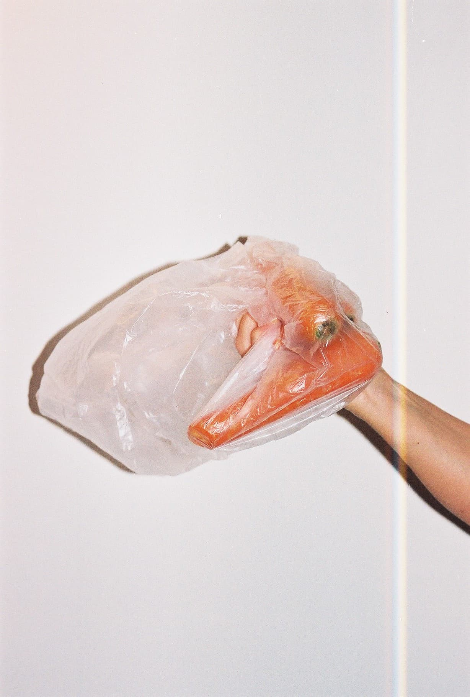
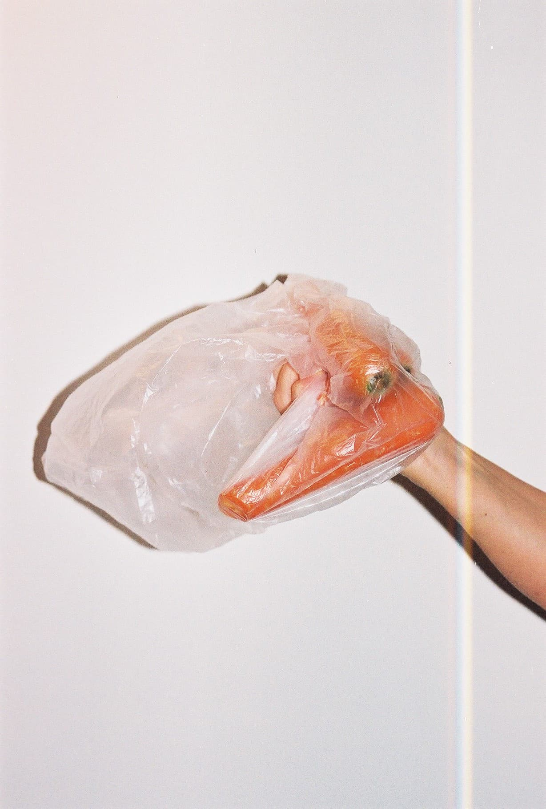

Protagonista
Protagonista
A seguinte série fotográfica surge como analogia ao constante protagonismo que o plástico recebe nos dias de hoje. Variados elementos são apresentados porém, o principal permanece. De forma minimalista e pouco ornamentada as imagens tendem a, por um lado, enfatizar esta constante presença no dia-a-dia, por outro, descontextualizar o elemento e simplesmente apreciá-lo sem tirar nenhuma conclusão negativa.

 
